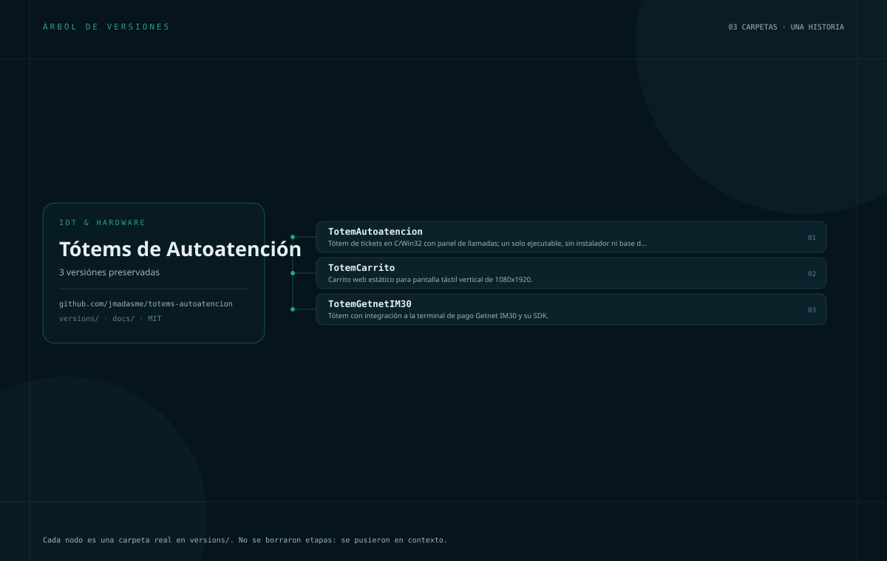
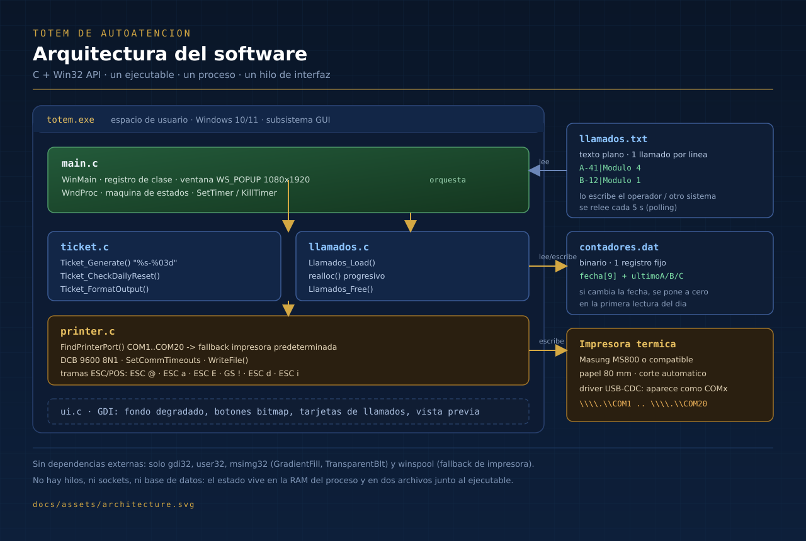
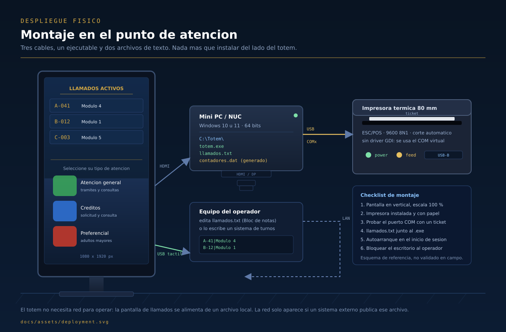

TotemAutoatencion
32 archivosTótem de tickets en C/Win32 con panel de llamadas; un solo ejecutable, sin instalador ni base de datos.
Ver carpetaTres tótems: tickets en C/Win32, carrito web vertical y pago con terminal Getnet IM30.

Tótems de Autoatención reúne tres implementaciones del mismo problema: atender a alguien sin una persona detrás del mostrador. La primera emite tickets A/B/C desde un binario Win32 en C, imprime por ESC/POS y muestra un panel de llamados. La segunda es un carrito web estático para pantalla vertical de 1080x1920. La tercera cobra con una terminal Getnet PAX IM30 desde una aplicación FastAPI.
Cada versión responde a un contexto distinto de despliegue, y esa es la tesis del conjunto: no hay un solo patrón correcto para un tótem. El de tickets evita instalador, runtime y base de datos; el carrito evita backend; la integración de pago aísla el SDK del proveedor. El costo también es distinto en cada caso, y está declarado: sin validación en hardware, con detección de impresora a ciegas y con una resolución única.
Cada carpeta conserva una etapa del proyecto. No se borraron las anteriores: se pusieron en contexto.
Tótem de tickets en C/Win32 con panel de llamadas; un solo ejecutable, sin instalador ni base de datos.
Ver carpetaCarrito web estático para pantalla táctil vertical de 1080x1920.
🔒 privadaTótem con integración a la terminal de pago Getnet IM30 y su SDK.
🔒 privadaC puro, Win32 y una impresora térmica por COM. Sin Electron, sin navegador y sin instalador gigante.
Los tótems comerciales suelen ser pesados, dependen de un navegador y de drivers del fabricante. En hardware modesto, eso significa arranques lentos y fallas difíciles de diagnosticar.
Una aplicación Win32 nativa que dibuja la interfaz, atiende la pantalla táctil y habla ESC/POS directamente con la impresora Masung MS800 por el puerto COM. Los tickets y los llamados se generan sin intermediarios.
El flujo del usuario, de principio a fin.
El usuario toca uno de los tres servicios en la pantalla vertical.
El programa genera el ticket A, B o C y lo envía por ESC/POS a la impresora.
El número se escribe en llamados.txt y se muestra en la pantalla.
El tótem vuelve al inicio y queda listo para el siguiente usuario.
La interfaz, la impresora y el estado viven en el mismo proceso nativo.

Los comandos se envían al puerto COM de la impresora, sin driver propietario.
La UI está compuesta para 1080×1920 y se opera por toque.
Los contadores y el archivo de llamados son texto plano, fáciles de respaldar.
Menos piezas, menos lugares donde fallar.
Botones grandes y flujo de tres servicios.
Impresión directa en la Masung MS800 por COM.
Contadores.dat para numerar tickets sin base de datos.
llamados.txt como interfaz simple para el display.
Binario pequeño, sin runtime web.
La impresora se maneja por comandos, no por un driver del fabricante.
Los diagramas se mantienen en el repositorio y se actualizan con el código.


C con la API Win32, compilado con MinGW. La interfaz se dibuja con GDI y la impresora se abre como un archivo COM.
C Win32 GDI ESC/POS MinGW Windows 10/11 totem.exe y obj/ no se versionan. Los BMP de recursos sí, porque son parte de la UI.
Totem · compilación
$ mingw32-make # Ejecutar totem.exe en Windows 10/11 # Configurar el puerto COM de la impresora
Cada decisión, cada límite y cada comando están documentados en el repositorio. Sin folletos: lo que funciona se muestra, lo que no, también.
Las primeras versiones existen para que estos errores no se repitan: cada una dejó una decisión de diseño verificable.
El código tenía una rama para imprimir el número a triple ancho y alto, pero nunca se ejecutaba: el formato emite « Numero: A-041» y la detección buscaba líneas que empezaran por A, B o C. La rama quedó muerta y se documentó; activarla exige cambiar el formato del ticket.
El primer enlace superaba los 9 MB porque los BMP de botones iban a 600x600 sin compresión y el fondo negro pesaba 2,5 MB. Se compiló con -Os -s y se aceptó el tamaño para conservar el ovalado. Quedó anotado que btn_negro.bmp sigue declarado sin uso.
El botón Confirmar solo mostraba una animación de éxito y vaciaba el carrito. No había integración de pago ni persistencia: al recargar se perdía todo. Se documentó como simulación y la versión Getnet IM30 cubrió después el cobro con terminal y comprobante.
La documentación previa describía funciones inexistentes, un módulo display.c que nunca se creó y un comando ESC G en lugar de ESC E. Se reescribieron README, datasheet y developer leyendo el código línea por línea. La regla quedó fijada: la fuente de verdad es el código.
Seis criterios con la misma escala en todo el catálogo, para comparar sin marketing.
TotemAutoatencion para filas y tickets; TotemCarrito para pedidos; Getnet si necesitás cobrar con tarjeta.
El tótem de tickets es Win32. El carrito es web y corre en cualquier navegador.
El tótem de tickets no usa base de datos; el carrito es estático.
No. Pesaba cientos de MB y tiene licencia del proveedor.
El carrito está diseñado para 1080x1920; adaptarlo requiere revisar el layout.
Usá esta familia como base para tótems de autoatención. Está documentada para que puedas entenderla, ejecutarla y continuarla sin adivinar.